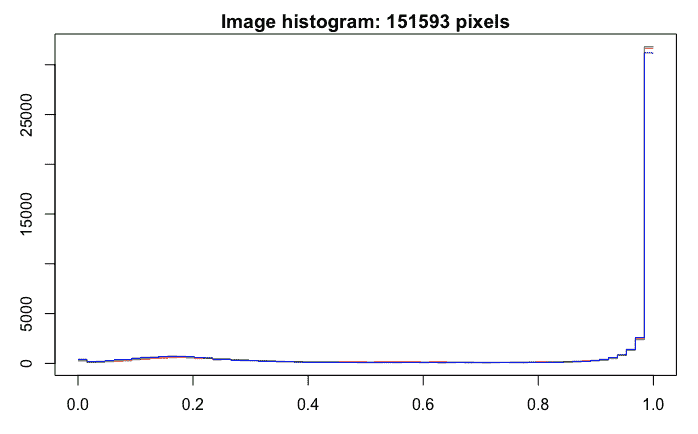
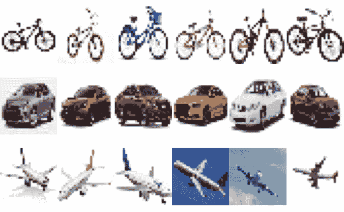

在前几章中，我们研究了为分类和回归问题开发深度神经网络模型的过程。在这两种情况下，我们处理的是结构化数据，模型是监督学习类型的，目标变量是可用的。图像或图片属于非结构化数据范畴。在本章中，我们将借助一个易于理解的示例，使用Keras包来说明深度学习神经网络在图像分类和识别中的应用。我们将从一个小样本开始，来说明开发一个图像分类模型的步骤。我们将把这个模型应用到涉及图像或图片标记的监督学习环境中。
Keras包含几个用于图像分类的内置数据集，如CIFAR10、CIFAR100、MNIST和时尚MNIST。CIFAR10包含50，000个32 x 32颜色训练图像和10，000个测试图像，具有10个标签类别。另一方面，CIFAR100包含50，000个32 x 32颜色训练图像和10，000个测试图像，标签类别多达100个。MNIST数据集有60，000幅28 x 28灰度图像用于训练，10，000幅图像用于测试10个不同的数字。时尚-MNIST数据集有60，000幅28 x 28灰度图像用于训练，10，000幅图像用于测试10个时尚类别。这些数据集的格式已经可以直接用于开发深度神经网络模型，只需最少的数据准备相关步骤。然而，为了更好地处理图像数据，我们将从将原始图像从我们的计算机读入RStudio开始，并回顾使图像数据为构建分类模型做好准备所需的所有步骤。
所涉及的步骤包括探索图像数据、调整图像大小和形状、一键编码、开发顺序模型、编译模型、拟合模型、评估模型、进行预测以及使用混淆矩阵进行模型性能评估。
更具体地说，在本章中，我们将讨论以下主题:
在本节中，我们将把图像数据读入R，并进一步研究它，以了解图像数据的各种特征。读取和显示图像的代码如下:
# Libraries
library(keras)
library(EBImage)
# Reading and plotting images
setwd("~/Desktop/image18")
temp = list.files(pattern="*.jpg")
mypic <- list()
for (i in 1:length(temp)) {mypic[[i]] <- readImage(temp[i])}
par(mfrow = c(3,6))
for (i in 1:length(temp)) plot(mypic[[i]])
par(mfrow = c(1,1))
从前面的代码中可以看出，我们将利用keras和EBImage库。EBImage库对于处理和探索图像数据很有用。我们将从读取存储在我电脑的image18文件夹中的18个JPEG图像文件开始。这些图片各包含6张从互联网上下载的自行车、汽车和飞机的图片。使用readImage功能读取这些图像文件，并存储在mypic中。
以下截图显示了所有18张图片:
从前面的截图中，我们可以看到自行车、汽车和飞机的六幅图像。你可能已经注意到，并非所有的图片都是同样的大小。例如，第五辆和第六辆自行车的尺寸明显不同。类似地，第四架和第五架飞机的大小也明显不同。让我们使用下面的代码更仔细地看看第五辆自行车的数据:
# Exploring 5th image data
print(mypic[[5]])
OUTPUT
Image
colorMode : Color
storage.mode : double
dim : 299 169 3
frames.total : 3
frames.render: 1
imageData(object)[1:5,1:6,1]
[,1] [,2] [,3] [,4] [,5] [,6]
[1,] 1 1 1 1 1 1
[2,] 1 1 1 1 1 1
[3,] 1 1 1 1 1 1
[4,] 1 1 1 1 1 1
[5,] 1 1 1 1 1 1
hist(mypic[[5]])
使用print函数，我们可以看到一辆自行车的图像(非结构化数据)是如何被转换成数字(结构化数据)的。第五辆自行车的尺寸是299 x 169 x 3，通过将这三个数相乘得到总共151，593个数据点或像素。第一个数字299表示以像素为单位的图像宽度，第二个数字169表示以像素为单位的图像高度。请注意，彩色图像由代表红色、蓝色和绿色的三个通道组成。从数据中提取的小表显示了 x 维度中的前五行数据，以及 y 维度中的前六行数据，并且 z 维度的值为1。虽然表体中的所有值都是1，但是它们应该在0和1之间变化。
彩色图像有红色、绿色和蓝色通道。灰度图像只有一个通道。
第五辆自行车的这些数据点用于创建直方图，如下面的屏幕截图所示:

前面的直方图显示了第五幅图像数据的强度值的分布。可以看出，对于该图像，大多数数据点具有高强度值。
现在让我们看看下面基于第16张图像(飞机图像)的数据直方图，以作比较:
从前面的直方图中，我们可以看到该图像对于红色、绿色和蓝色具有不同的强度值。一般来说，强度值介于0和1之间。接近零的数据点代表图像中较暗的颜色，接近一的数据点代表图像中较亮的颜色。
让我们用下面的代码来看看与第16张图片有关的数据，一架飞机:
# Exploring 16th image data
print(mypic[[16]])
OUTPUT
Image
colorMode : Color
storage.mode : double
dim : 318 159 3
frames.total : 3
frames.render: 1
imageData(object)[1:5,1:6,1]
[,1] [,2] [,3] [,4] [,5] [,6]
[1,] 0.2549020 0.2549020 0.2549020 0.2549020 0.2549020 0.2549020
[2,] 0.2549020 0.2549020 0.2549020 0.2549020 0.2549020 0.2549020
[3,] 0.2549020 0.2549020 0.2549020 0.2549020 0.2549020 0.2549020
[4,] 0.2588235 0.2588235 0.2588235 0.2588235 0.2588235 0.2588235
[5,] 0.2588235 0.2588235 0.2588235 0.2588235 0.2588235 0.2588235
从前面代码提供的输出中，我们可以看到两幅图像具有不同的尺寸。第16幅图像的尺寸为318 x 159 x 3，总共有151，686个数据点或像素。
为了准备这些数据来开发图像分类模型，我们将从调整所有图像的尺寸到相同的尺寸开始。
在这一节中，我们将回顾为开发图像分类模型准备图像数据的步骤。这些步骤将涉及调整图像大小以获得所有图像的相同大小，随后是整形、数据分区和响应变量的一键编码。
为了准备用于开发分类模型的数据，我们首先使用以下代码将所有18幅图像的尺寸调整为相同的大小:
# Resizing
for (i in 1:length(temp)) {mypic[[i]] <- resize(mypic[[i]], 28, 28)}
从前面的代码中可以看出，所有图像的大小现在都调整为28 x 28 x 3。让我们再次绘制所有的图像，看看使用下面的代码调整大小的影响:
# Plot images
par(mfrow = c(3,6))
for (i in 1:length(temp)) plot(mypic[[i]])
par(mfrow = c(1,1)
当我们缩小图片的尺寸时，会导致像素数量减少，进而导致图片质量下降，如下图所示:

接下来，我们将使用以下代码将28 x 28 x 3的维度重新调整为28 x 28 x 3的单一维度(或2，352个向量):
# Reshape
for (i in 1:length(temp)) {mypic[[i]] <- array_reshape(mypic[[i]], c(28, 28,3))}
str(mypic)
OUTPUT
List of 18
$ : num [1:28, 1:28, 1:3] 1 1 1 1 1 1 1 1 1 1 ...
$ : num [1:28, 1:28, 1:3] 1 1 1 1 1 ...
$ : num [1:28, 1:28, 1:3] 1 1 1 1 1 1 1 1 1 1 ...
$ : num [1:28, 1:28, 1:3] 1 1 1 1 1 1 1 1 1 1 ...
$ : num [1:28, 1:28, 1:3] 1 1 1 1 1 1 1 1 1 1 ...
$ : num [1:28, 1:28, 1:3] 1 1 1 1 1 1 1 1 1 1 ...
$ : num [1:28, 1:28, 1:3] 0.953 0.953 0.953 0.953 0.953 ...
$ : num [1:28, 1:28, 1:3] 1 1 1 1 1 1 1 1 1 1 ...
$ : num [1:28, 1:28, 1:3] 1 1 1 1 1 1 1 1 1 1 ...
$ : num [1:28, 1:28, 1:3] 1 1 1 1 1 1 1 1 1 1 ...
$ : num [1:28, 1:28, 1:3] 1 1 1 1 1 1 1 1 1 1 ...
$ : num [1:28, 1:28, 1:3] 1 1 1 1 1 1 1 1 1 1 ...
$ : num [1:28, 1:28, 1:3] 1 1 1 1 1 1 1 1 1 1 ...
$ : num [1:28, 1:28, 1:3] 1 1 1 1 1 1 1 1 1 1 ...
$ : num [1:28, 1:28, 1:3] 1 1 1 1 0.328 ...
$ : num [1:28, 1:28, 1:3] 0.26 0.294 0.312 0.309 0.289 ...
$ : num [1:28, 1:28, 1:3] 0.49 0.49 0.49 0.502 0.502 ...
$ : num [1:28, 1:28, 1:3] 1 1 1 1 1 1 1 1 1 1 ..
通过使用str(mypic)观察前面数据的结构，我们可以看到列表中有18个不同的条目，对应于我们开始时的18幅图像。
接下来，我们将创建培训、验证和测试数据。
我们将分别使用自行车、汽车和飞机的前三幅图像进行训练，每种类型的第四幅图像用于验证，每种类型的其余两幅图像用于测试。因此，训练数据将有九个图像，验证数据将有三个图像，测试数据将有六个图像。下面是实现这一点的代码:
# Training Data
a <- c(1:3, 7:9, 13:15)
trainx <- NULL
for (i in a) {trainx <- rbind(trainx, mypic[[i]]) }
str(trainx)
OUTPUT
num [1:9, 1:2352] 1 1 1 1 0.953 ...
# Validation data
b <- c(4, 10, 16)
validx <- NULL
for (i in b) {validx <- rbind(validx, mypic[[i]]) }
str(validx)
OUTPUT
num [1:3, 1:2352] 1 1 0.26 1 1 ...
# Test Data
c <- c(5:6, 11:12, 17:18)
testx <- NULL
for (i in c) {testx <- rbind(testx, mypic[[i]])}
str(testx)
OUTPUT
num [1:6, 1:2352] 1 1 1 1 0.49 ...
正如您在前面的代码中看到的，我们将使用rbind函数在创建训练、验证和test数据时组合每个图像的数据行。在组合来自九个图像的数据行之后，trainx的结构指示有9行和2352列。类似地，对于验证数据，我们有3行2，352列，对于测试数据，我们有6行2，352列。
对于响应变量的一次性编码，我们使用以下代码:
# Labels
trainy <- c(0,0,0,1,1,1,2,2,2)
validy <- c(0,1,2)
testy <- c(0,0,1,1,2,2)
# One-hot encoding
trainLabels <- to_categorical(trainy)
validLabels <- to_categorical(validy)
testLabels <- to_categorical(testy)
trainLabels
OUTPUT
[,1] [,2] [,3] [1,] 1 0 0 [2,] 1 0 0 [3,] 1 0 0 [4,] 0 1 0 [5,] 0 1 0 [6,] 0 1 0 [7,] 0 0 1 [8,] 0 0 1 [9,] 0 0 1
从前面的代码中，我们可以看到以下内容:
现在，我们有了可以用于开发深度神经网络分类模型的数据格式，这就是我们将在下一节中做的事情。
在这一部分中，我们将开发一个图像分类模型来对自行车、汽车和飞机的图像进行分类。我们将首先指定一个模型架构，然后我们将编译该模型，然后使用训练和验证数据来拟合该模型。
在开发模型架构时，我们首先创建一个顺序模型，然后添加不同的层。以下是代码:
# Model architecture
model <- keras_model_sequential()
model %>%
layer_dense(units = 256, activation = 'relu', input_shape = c(2352)) %>%
layer_dense(units = 128, activation = 'relu') %>%
layer_dense(units = 3, activation = 'softmax')
summary(model)
OUTPUT
______________________________________________________________________
Layer (type) Output Shape Param #
======================================================================
dense_1 (Dense) (None, 256) 602368
______________________________________________________________________
dense_2 (Dense) (None, 128) 32896
_____________________________________________________________________
dense_3 (Dense) (None, 3) 387
======================================================================
Total params: 635,651
Trainable params: 635,651
Non-trainable params: 0
_______________________________________________________________________
从前面的代码可以看出，输入层有2352个单元(28 x 28 x 3)。对于初始模型，我们使用两个隐藏层，分别为256和128个单元。对于两个隐藏层，我们将使用relu激活功能。对于输出层，我们将使用3个单位，因为目标变量有3个类，分别代表自行车、汽车和飞机。该模型的参数总数为635，651。
开发完模型架构后，我们可以使用以下代码编译模型:
# Compile model
model %>% compile(loss = 'categorical_crossentropy',
optimizer = 'adam',
metrics = 'accuracy')
我们通过使用categorical_crossentropy来编译损失模型，因为我们正在进行多类分类。我们已经分别为优化器和指标指定了adam和accuracy。
现在我们准备训练模型。以下是这方面的代码:
# Fit model
model_one <- model %>% fit(trainx,
trainLabels,
epochs = 30,
batch_size = 32,
validation_data = list(validx, validLabels))
plot(model_one)
从前面的代码中，我们可以看到以下事实:
注意，在前面的章节中，我们通过指定某个百分比来使用validation_split，比如20%；然而，如果我们以20%的比率使用validation_split，它将使用最后20%的训练数据(所有飞机图像)进行验证。
下图显示了分别针对训练和验证数据的30个时期的损失和准确性:

从前面的图中，我们可以得出以下结论:
接下来，让我们更详细地评估模型的图像分类性能，以了解其行为。
在本节中，我们将进行模型评估，并在预测的帮助下为训练和测试数据创建混淆矩阵。让我们从使用训练数据评估模型的图像分类性能开始。
我们现在将获得训练数据的损失和准确性值，然后使用以下代码创建混淆矩阵:
# Model evaluation
model %>% evaluate(trainx, trainLabels)
OUTPUT
12/12 [==============================] - 0s 87us/step
$loss
[1] 0.055556579307
$acc
[1] 1
# Confusion matrix
pred <- model %>% predict_classes(trainx)
table(Predicted=pred, Actual=trainy)
OUTPUT
Actual
Predicted 0 1 2
0 3 0 0
1 0 3 0
2 0 0 3
从前面的输出可以看出，损耗和精度值分别是0.056和1。基于训练数据的混淆矩阵指示所有九个图像都被正确地分类为三个类别，因此得到的准确度是1。
我们现在可以查看该模型提供的训练数据中所有九幅图像的三个类别的概率。以下是代码:
# Prediction probabilities
prob <- model %>% predict_proba(trainx)
cbind(prob, Predicted_class = pred, Actual = trainy)
OUTPUT
Predicted_class Actual [1,] 0.9431666135788 0.007227868307 0.049605518579 0 0 [2,] 0.8056846261024 0.005127847660 0.189187481999 0 0 [3,] 0.9556384682655 0.001881886506 0.042479615659 0 0 [4,] 0.0018005876336 0.988727569580 0.009471773170 1 1 [5,] 0.0002136278927 0.998095452785 0.001690962003 1 1 [6,] 0.0008950306219 0.994426369667 0.004678600468 1 1 [7,] 0.0367377623916 0.010597365908 0.952664911747 2 2 [8,] 0.0568452328444 0.011656147428 0.931498587132 2 2 [9,] 0.0295505002141 0.011442330666 0.959007143974 2 2
在前面的输出中，前三列显示图像是自行车、汽车或飞机的概率，这三个概率的总和是1。我们可以从输出中观察到以下情况:
通过查看预测概率，我们可以更深入地了解模型的分类性能，这不能仅通过查看准确性值来获得。然而，虽然训练数据的良好性能是必要的，但这不足以达到可靠的图像分类模型。当分类模型遇到过度拟合问题时，我们很难根据模型没有看到的测试数据的训练数据来复制好的结果。因此，对一个好的分类模型的真正测试是当它对测试数据表现良好时。现在让我们回顾一下测试数据模型的图像分类性能。
我们现在可以获得测试数据的损失和准确性值，然后使用以下代码创建混淆矩阵:
# Loss and accuracy
model %>% evaluate(testx, testLabels)
OUTPUT
6/6 [==============================] - 0s 194us/step
$loss
[1] 0.5517520905
$acc
[1] 0.8333333
# Confusion matrix
pred <- model %>% predict_classes(testx)
table(Predicted=pred, Actual=testy)
OUTPUT
Actual
Predicted 0 1 2
0 2 0 0
1 0 1 0
2 0 1 2
从前面的输出可以看出，测试数据中图像的损失值和精度值分别是0.552和0.833。这些结果略逊于我们看到的训练数据的数字；然而，当基于看不见的数据评估模型时，性能会有所下降。混淆矩阵指示一个错误分类的图像，其中汽车的图像被误认为是飞机的图像。因此，对于六个正确分类中的五个，基于测试数据的模型准确度是83.3%。现在，让我们通过调查基于测试数据中的图像的概率值来更深入地了解模型的预测性能。
我们现在可以查看测试数据中所有六个图像的三个类别的概率。以下是代码:
# Prediction probabilities
prob <- model %>% predict_proba(testx)
cbind(prob, Predicted_class = pred, Actual = testy)
OUTPUT
Predicted_class Actual [1,] 0.587377548218 0.02450981364 0.38811263442 0 0 [2,] 0.532718658447 0.04708640277 0.42019486427 0 0 [3,] 0.115497209132 0.18486714363 0.69963568449 2 1 [4,] 0.001700860681 0.98481327295 0.01348586939 1 1 [5,] 0.230999588966 0.03030913882 0.73869132996 2 2 [6,] 0.112148292363 0.02054920420 0.86730253696 2 2
通过观察这些预测的概率，我们可以得出以下结论:
因此，总的来说，我们可以说，该模型的性能肯定还有进一步改进的余地。在下一节中，我们将探讨如何提高模型的性能。
在这一节中，我们将探索一个更深层次的网络来提高图像分类模型的性能。我们将查看结果进行比较。
本节中用于试验更深层次网络的代码如下:
# Model architecture
model <- keras_model_sequential()
model %>%
layer_dense(units = 512, activation = 'relu', input_shape = c(2352)) %>%
layer_dropout(rate = 0.1) %>%
layer_dense(units = 256, activation = 'relu') %>%
layer_dropout(rate = 0.1) %>%
layer_dense(units = 3, activation = 'softmax')
summary(model)
OUTPUT
_______________________________________________________________________
Layer (type) Output Shape Param #
=======================================================================
dense_1 (Dense) (None, 512) 1204736
_______________________________________________________________________
dropout_1 (Dropout) (None, 512) 0
_______________________________________________________________________
dense_2 (Dense) (None, 256) 131328
_______________________________________________________________________
dropout_2 (Dropout) (None, 256) 0
_______________________________________________________________________
dense_3 (Dense) (None, 3) 771
=======================================================================
Total params: 1,336,835
Trainable params: 1,336,835
Non-trainable params: 0
_______________________________________________________________________
# Compile model
model %>% compile(loss = 'categorical_crossentropy',
optimizer = 'adam',
metrics = 'accuracy')
# Fit model
model_two <- model %>% fit(trainx,
trainLabels,
epochs = 30,
batch_size = 32,
validation_data = list(validx, validLabels))
plot(model_two)
从前面的代码中，我们可以看到以下内容:
下图提供了50个时期的训练和验证数据的准确度和损失值:

从前面的图表中，我们可以看到以下内容:
为了进一步探索模型的图像分类性能的任何变化，这些变化从图形摘要中可能不明显，让我们看一些数字摘要:
# Loos and accuracy
model %>% evaluate(trainx, trainLabels)
OUTPUT
12/12 [==============================] - 0s 198us/step
$loss
[1] 0.03438224643
$acc
[1] 1
# Confusion matrix
pred <- model %>% predict_classes(trainx)
table(Predicted=pred, Actual=trainy)
OUTPUT
Actual
Predicted 0 1 2
0 3 0 0
1 0 3 0
2 0 0 3
从前面的输出中，我们可以看到损耗值现在已经减少到0.034，精度保持在1.0。对于训练数据，我们获得了与之前相同的混淆矩阵结果，因为所有九幅图像都被模型正确分类，这给出了100%的准确度水平。
# Prediction probabilities
prob <- model %>% predict_proba(trainx)
cbind(prob, Predicted_class = pred, Actual = trainy)
OUTPUT
Predicted_class Actual [1,] 0.97638195753098 0.0071088117547 0.01650915294886 0 0 [2,] 0.89875286817551 0.0019298568368 0.09931717067957 0 0 [3,] 0.98671281337738 0.0004396488657 0.01284754090011 0 0 [4,] 0.00058794603683 0.9992876648903 0.00012432398216 1 1 [5,] 0.00005639552546 0.9999316930771 0.00001191849515 1 1 [6,] 0.00020669832884 0.9997472167015 0.00004611289114 1 1 [7,] 0.03771930187941 0.0022936603054 0.95998704433441 2 2 [8,] 0.08463590592146 0.0022607713472 0.91310334205627 2 2 [9,] 0.03016609139740 0.0019471622072 0.96788680553436 2 2
根据我们作为训练数据的输出而获得的前述预测概率，我们可以得出以下观察结果:
# Loss and accuracy
model %>% evaluate(testx, testLabels)
OUTPUT
6/6 [==============================] - 0s 345us/step
$loss
[1] 0.40148338683
$acc
[1] 0.8333333
# Confusion matrix
pred <- model %>% predict_classes(testx)
table(Predicted=pred, Actual=testy)
OUTPUT
Actual
Predicted 0 1 2
0 2 0 0
1 0 1 0
2 0 1 2
如前面的输出所示，测试数据丢失和精度值分别为0.401和0.833。我们确实看到损失值有所改善；然而，精度值再次与先前相同。查看混淆矩阵，我们可以看到，这一次，一辆汽车的图像被错误地归类为飞机。因此，我们看不出基于混淆矩阵的任何重大差异。
# Prediction probabilities
prob <- model %>% predict_proba(testx)
cbind(prob, Predicted_class = pred, Actual = testy)
OUTPUT
Predicted_class Actual [1,] 0.7411330938339 0.015922509134 0.242944419384 0 0 [2,] 0.7733710408211 0.021422179416 0.205206796527 0 0 [3,] 0.3322730064392 0.237866103649 0.429860889912 2 1 [4,] 0.0005808877177 0.999227762222 0.000191345287 1 1 [5,] 0.2163420319557 0.009395645000 0.774262309074 2 2 [6,] 0.1447975188494 0.002772571286 0.852429926395 2 2
使用测试数据的预测概率，我们可以得出以下两个观察结果:
因此，总的来说，我们观察到，通过开发更深层次的神经网络，我们能够提高模型的性能。从精度计算来看，性能的提高并不明显；然而，预测概率的计算允许我们开发更好的洞察力和比较模型性能。
在这一章中，我们探讨了图像数据和深度神经网络图像分类模型。我们使用了来自自行车、汽车和飞机的18幅图像的数据，并进行了适当的数据处理，以使数据准备好用于Keras库。我们将图像数据划分为训练、验证和测试数据，随后使用训练数据开发了一个深度神经模型，并通过查看训练和测试数据的损失、准确性、混淆矩阵和概率值来评估其性能。我们还对模型进行了修改，以提高其分类性能。此外，我们观察到，当混淆矩阵提供相同水平的性能时，预测概率可能能够帮助提取两个模型之间的细微差异。
在下一章中，我们将回顾使用卷积神经网络(CNN)开发深度神经网络图像分类模型的步骤，这在图像分类应用中变得非常流行。细胞神经网络被认为是图像分类问题的黄金标准，对于大规模的图像分类应用非常有效。